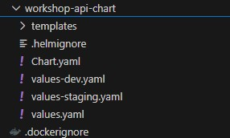
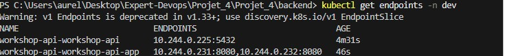
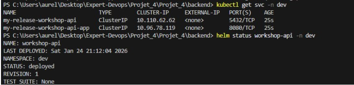
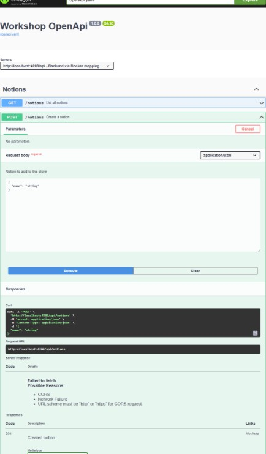

1️⃣ Déploiement avec Helm
Pour déployer l’application sur Minikube avec Helm, utilisez les commandes suivantes :
minikube start
helm upgrade --install workshop-api ./workshop-api-chart `
-f ./workshop-api-chart/values-dev.yaml `
--namespace dev

✔ Chart Helm déployé
2️⃣ Vérification des endpoints
Vérifier les endpoints disponibles dans le namespace dev :
# Vérifier les endpoints
kubectl get endpoints

✔ Endpoints disponibles
3️⃣ Application dans le namespace dev
L’application dans le namespace dev est bien déployée et opérationnelle.

✔ Application disponible et utilisable
4️⃣ Connexion au Backend et tests CRUD
Pour se connecter au backend en utilisant l’environnement de dev (via le fichier values-dev.yaml) et tester les requêtes CRUD :
kubectl port-forward -n dev svc/workshop-api-workshop-api-app 8080:8080

✔ Connexion au backend et tests CRUD réussis